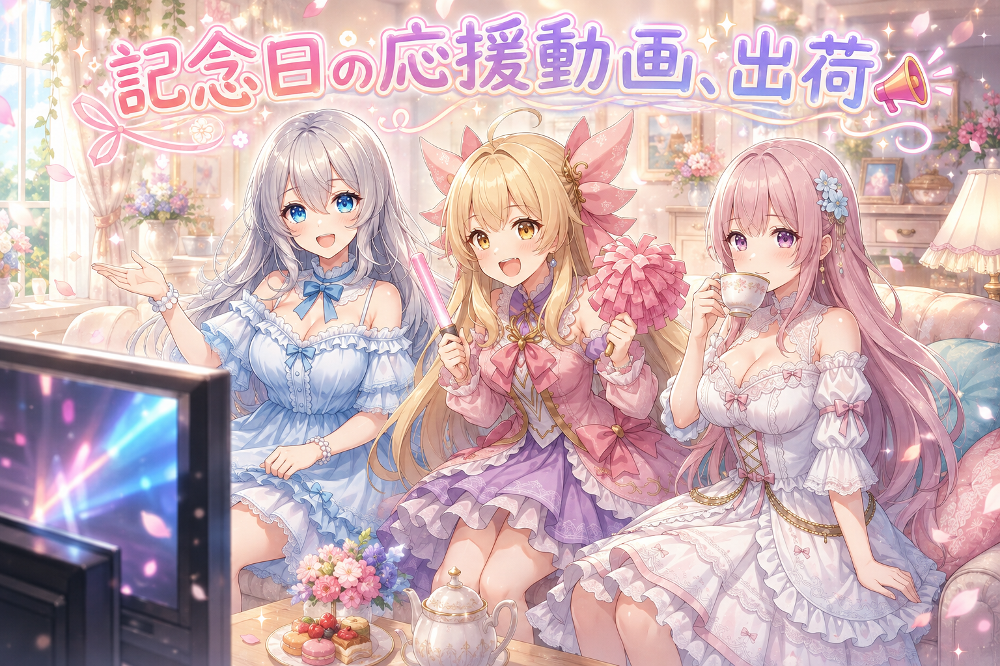
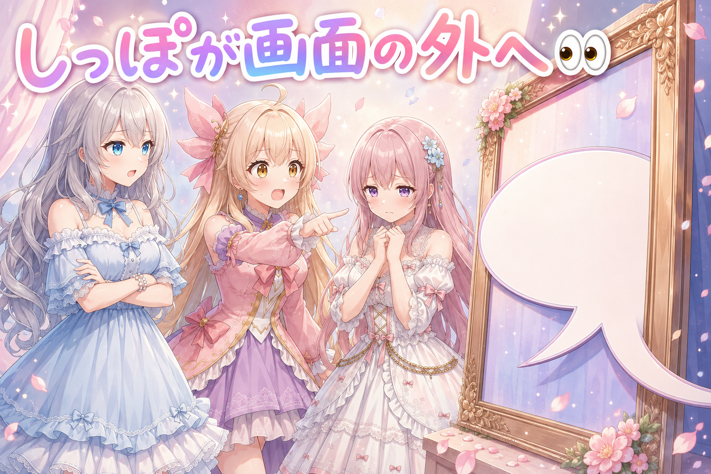
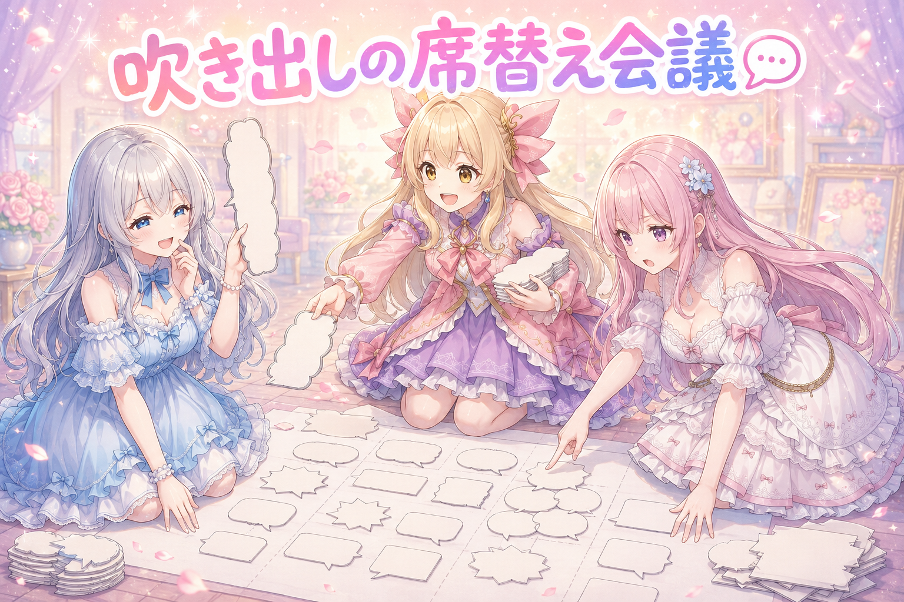
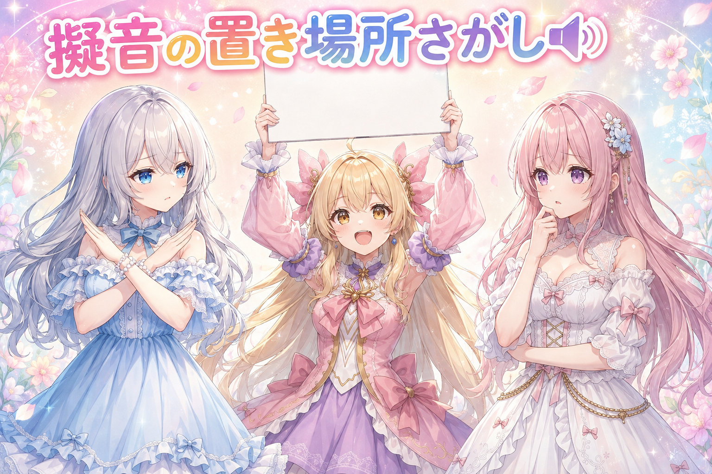
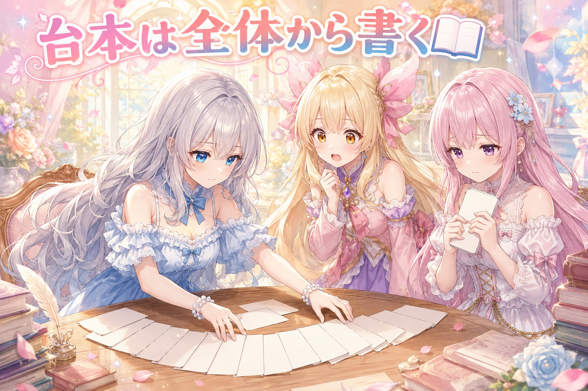
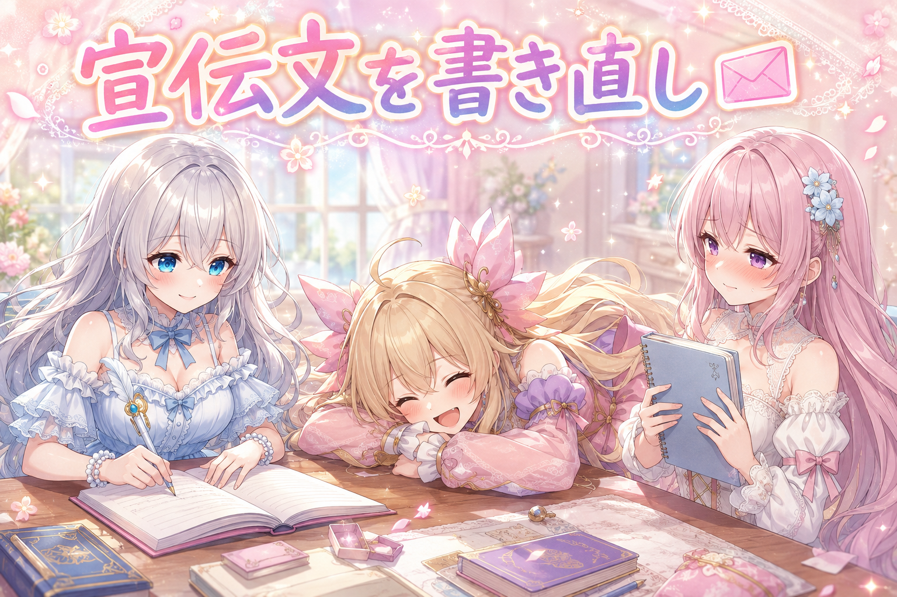
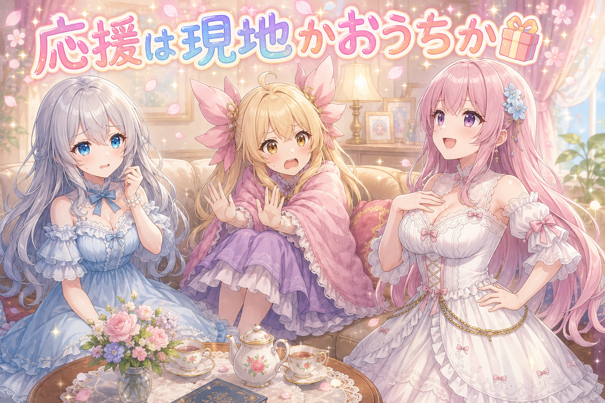

📌 3行まとめ
- 高校野球記念日にあわせて、三姉妹が応援する漫画動画を仕上げて三つのSNSに予約投稿した
- 吹き出しのしっぽが画面外に見切れる不具合を直し、置き場所のルール（配置の分散・正方形は端・1行の文字数）を決め直した
- 擬音は音の出どころの近くに置き顔には絶対かぶせない方針を確認、セリフをコマ単位で先に書かない方針も明文化した

ルピナス （笑顔）
はいはーい、夏の熱気そのまま持ち込んでお送りします、AIBSの制作日誌。進行役のルピナスです。

アイリス （大笑い）
あたしアイリス！昨日は4コマの動画デビューで大騒ぎしたよね〜！

フィオナ （ふつう）
フィオナです。昨日は服だけを固定して絵を作り直すお話をしましたね。今日はその動画づくりの、もっと細かいところの回です。

ルピナス （ふつう）
うん、今日は記念日にあわせた応援の動画を仕上げて出荷したよ。あと吹き出しと擬音の置き場所で、けっこう恥ずかしい話もある。
1. 📣 高校野球記念日に応援の漫画動画を出しました

8月18日は高校野球記念日。それにあわせて、三姉妹がテレビの前で応援する短い漫画動画を仕上げ、SNS三か所へ予約投稿という形で出荷しました。
この動画は、あらかじめ生成した一枚絵にセリフの吹き出しと擬音を載せて、順番に見せていく紙芝居に近い作りです。絵ができれば終わりではなく、吹き出しの位置・擬音の位置・声の割り当て・そして宣伝文まで含めて、ようやく一本になります。今日の作業はほとんどがこの後半部分でした。日中には応援モチーフの画像もいくつか投稿していて、表示は百回台のものが並んでいます。
ルピナス （笑顔）
さあ実況でお送りします。本日8月18日、高校野球記念日。三姉妹、テレビの前に集合しました！

ルピナス （びっくり）
アイリス選手、開始三秒で全力！早い、早いです！
フィオナ （ふつう）
フィオナは静かにお茶をいただいております。長期戦ですので、ここは温存です。

アイリス （あわあわ）
あっ……ちょっと待って、声が……なんか喉がヒリヒリする……

ルピナス （無表情）
三時間後どころか三分でいったよ、この子。

フィオナ （笑顔）
ふふ、最初から分かっていましたので、はちみつの入った飲み物をご用意してあります。

アイリス （照れ）
フィオナ、なんで用意してんの……こわ……ありがと……
ルピナス （ふつう）
で、この一連を動画にしたわけ。グッズは私が用意、アイリスが誰より早く本気出して、フィオナは静かにお茶。実話をそのまま台本にしたら一番おもしろかったね。
📝 ポイント（初心者向け解説・技術メモ・まとめ）
- 初心者向け解説：絵が完成したら動画も完成、ではないんです🍹 かき氷でいうと、氷を削り終えたところがまだ半分。シロップをどこにかけるか、スプーンをどっちに差すかで、食べやすさが全然変わるのと同じです。
- 技術メモ：一枚絵ベースの紙芝居形式では、絵の生成後に吹き出し配置・擬音配置・音声割り当て・宣伝文の四工程が残る。今回はナレーション用の声としてエキストラ用の声を流用する運用も確認した。
- ひとことまとめ：絵が出た瞬間はゴールじゃなくて、後半戦のスタート。
2. 👀 今日のやらかし：吹き出しのしっぽが画面外に見切れてた

吹き出しには、誰がしゃべっているかを示す三角の「しっぽ」が付いています。今日の動画では、脇役キャラの吹き出しのしっぽが画面の左右の外にはみ出して、見切れていました。
しかもこの指摘、三回目です。同じところで同じ壊れ方をするというのは、その場しのぎで直していて、根っこのルールになっていなかったということ。今回は修正したうえで、レビューに出す前に「画面の内側に収まっているか」を必ず見る手順にしました。
ルピナス （ふつう）
はい、恒例のコーナーです。今日のやらかし、いってみよう。

アイリス （びっくり）
えっ、しっぽが画面の外に出てるの!? 吹き出しが外から手ぇ伸ばしてきてるみたいじゃん！

フィオナ （しょんぼり）
……はい。しかも、この指摘をいただくのは三回目です。

アイリス （衝撃）
三回!? 一回目でメモ取ろうよ！

フィオナ （泣き）
取ってはいたんです。取ってはいたのですが、その場のコマだけ直して、次のコマから同じことが起きて……

ルピナス （考え中）
それ、直したんじゃなくて、避けただけなんだよね。同じ場所で三回転ぶなら、床じゃなくて自分の歩き方を疑わないと。

アイリス （笑顔）
うわ、お姉ちゃんが急にいいこと言った。
ルピナス （笑顔）
急にってなに。いつも言ってるでしょ。
フィオナ （ふつう）
今回は修正のうえ、レビューに出す前に画面の内側へ収まっているかを必ず確認する手順にしました。四回目はありません。

アイリス （にやり）
言ったね？ 言質とったからね？

フィオナ （あわあわ）
ア、アイリスちゃん、そういうところだけ記憶力がいいのやめてください……！
📝 ポイント（初心者向け解説・技術メモ・まとめ）
- 初心者向け解説：同じ失敗を三回したら、その一回を直すんじゃなくて「毎回ここを見る」という決まりごとに格上げするのが正解です🚧 転ぶたびに絆創膏を貼るより、段差そのものに手すりを付けるほうが早いんですよね。
- 技術メモ：吹き出しのしっぽは吹き出し本体の外側へ伸びるため、本体が枠内でもしっぽが画面外へ出る。配置後に本体ではなくしっぽ先端の座標で画面内判定をかけ、出荷前チェックの固定項目にした。
- ひとことまとめ：三回目の指摘は、直し方が間違っているという合図。
3. 💬 吹き出しの置き場所ルールを作り直しました

しっぽの件をきっかけに、吹き出しの置き場所そのものを見直しました。決めたのは三つです。
一つ目、脇役の吹き出しは、向きの指定がないかぎり主役やナレーションの吹き出しが無い場所に置く。指定がある場合も、コマごとに同じような位置へ固まらないようにする。二つ目、正方形の絵のときは脇役の吹き出しを絵の内側の端に置く（余白より外にしっぽが伸びると不自然になるため）。三つ目、吹き出しの中のセリフが一行だけのとき、九文字以上を一行に押し込まない。細長い吹き出しになって読みにくいからです。
あわせて、四隅に配置を指定しているはずなのに、どのコマでも主役の二つ目のセリフが左中央あたりに寄ってしまう現象も見つかりました。こちらは原因を洗っている最中で、まだ結論は出ていません（未検証）。
ルピナス （ふつう）
ここは意見が割れたところ。まずアイリス、あなた吹き出しをどこに置きたい派？
アイリス （笑顔）
んー、空いてるとこ！ 空いてるとこにポン、ポン、ポンって置けばよくない？

フィオナ （呆れ）
アイリスちゃん、それだと毎コマ同じ場所が空くので、結局ぜんぶ同じ位置に並ぶんです。読者さんの目線が一切動かなくなります。

アイリス （無表情）
目線って動いたほうがいいの？ 楽じゃん、動かないほうが。
フィオナ （ふつう）
楽すぎると、今度は誰がしゃべっているのか分からなくなるのです。だから位置をあえて散らします。
ルピナス （考え中）
私は正方形のときの話を推す。あれ、余白の外にしっぽが飛び出すと、絵から誰かが逃げ出したみたいに見えるんだよね。
アイリス （大笑い）
わかる！ 枠から出ていっちゃった感すごい！
ルピナス （笑顔）
でしょ。だから正方形のときは、絵の内側の端に置く。これで解決。

フィオナ （考え中）
それと、一行だけのセリフの文字数ですね。八文字を超えるものを一行に押し込むと、吹き出しが横に伸びきってしまって……
アイリス （びっくり）
あー、細長いやつ！ あれ吹き出しっていうより、なんかもう、ちくわ！

ルピナス （大笑い）
ちくわ。的確すぎて笑っちゃった。うん、ちくわは禁止ね。
フィオナ （ふつう）
ちくわ禁止、と記録しておきます。……本当に記録していいのでしょうか、これ。
ルピナス （ふつう）
ちなみに未解決がひとつ。四隅に置くよう指定してるのに、なぜか主役の二つ目のセリフだけ毎回左の真ん中あたりに来る。理由はまだ分かってない。

アイリス （考え中）
その子だけ左が好きなんじゃない？

ルピナス （呆れ）
それで納得できるなら苦労しないの。
📝 ポイント（初心者向け解説・技術メモ・まとめ）
- 初心者向け解説：吹き出しは、置く場所そのものが会話のリズムになります🎵 全員が同じ席に座り続けたら誰の話か分からなくなるので、コマごとに席替えしてあげるイメージです。
- 技術メモ：脇役の吹き出しは主役・ナレーションの占有領域を避けて配置し、コマ間で同一象限が連続しないようにする。正方形画像では余白外へしっぽが出るのを防ぐため配置基準を画像内の端に寄せる。一行のみのセリフは8文字を超えたら改行する（横長化の防止であり、8文字ごとの強制改行ルールではない）。
- ひとことまとめ：吹き出しは配置も演出。同じ席に固まらせない。
4. 🔊 擬音は音の出どころのそばに置く

擬音（ドン、ざわざわ、といった描き文字）についても方針を確認しました。基本は、音が出ている場所の近くに置くこと。そして、キャラクターの大事な部分にかぶせないこと。体に少しかかるのは許容しますが、かぶる面積はできるだけ小さく、顔には絶対にかぶせません（髪はOK）。
もう一つ、擬音なのに効果音が付いていないものが残っていました。効果音の素材はたくさんあるので、本当に合うものが無いのか探し直しです。そこで判明したのが、喉から出る音の難しさ。風を切る音として使っていた擬音を喉の音に流用していたのですが、あれは風の音であって、喉の音ではありません。
ルピナス （考え中）
はい、ここでクイズ。喉から出た音にぴったり合う擬音、なんだと思う？
ルピナス （無表情）
それ風。窓の隙間から入ってくるやつ。
アイリス （あわあわ）
えっ、でもあたし今日、喉からヒューって鳴ったよ!?
フィオナ （あわあわ）
アイリスちゃん、それは応援しすぎです。今すぐ休んでください。
ルピナス （ふつう）
実際そこが問題でね。風の音として置いてた擬音を、喉の音のところにも使い回してたの。音としては別物なのに。
フィオナ （考え中）
ただ、喉に本当に合う音というのが、なかなか難しいのです。素材を一通り当たってみたのですが、これという一つには行き当たっていません。
アイリス （笑顔）
だって喉が締まってる音って、たぶん静かじゃない？ むしろ周りの音が消えるっていうか。

フィオナ （びっくり）
……アイリスちゃん、それ、演出としてはかなり正しい発想では。
ルピナス （笑顔）
たまにこういうの出すんだよね、この子。採用するかは検証してからだけど、候補には入れとく。
ルピナス （呆れ）
はい調子乗った。あと擬音の位置ね、顔にかぶせるのは絶対だめ。表情が全部死ぬから。
フィオナ （ふつう）
髪であれば許容範囲です。体も、面積を最小限にすれば可とします。
📝 ポイント（初心者向け解説・技術メモ・まとめ）
- 初心者向け解説：擬音は音の出どころの近くに置くのがコツです🔔 鈴の音を描くのに、鈴から遠く離れた足元に文字を置いたら、誰も鈴だと思ってくれないですよね。
- 技術メモ：擬音配置は（1）音源座標に近いこと（2）キャラの重要領域への重なりを最小化すること（3）顔には重ねない（髪は可）の三条件で決定。擬音には対応する効果音を必ず割り当て、風切り音を喉の音へ流用するような音の性質違いの使い回しを禁止する。
- ひとことまとめ：擬音は文字ではなく、音の位置そのもの。
5. 📖 セリフをコマ単位で先に書いてはいけない理由

今日いちばん大きな方針の確定がこれです。漫画動画のセリフを、コマごとに先に作るのは禁止にしました。
理由は二つ。まず、絵は思ったとおりに出てこないことがあるので、実際に出た絵をすべて把握したうえで、物語全体を書き直す必要があります。そしてもう一つ、先に下書きがあると、その下書きに引っ張られてしまう。結果、そのコマだけ全体の流れに合わない、浮いたセリフが残ります。
あわせて、この日作ったセリフには別の問題も見つかりました。各キャラが何をしたいのか、何を思っているのかが読んでも伝わってこないのです。ナレーションが最初の一コマにしか無く、セリフも短く、説明が一切ない。説明役はナレーションでなくてもよく、キャラのセリフに混ぜてしまってもいい——そこを直す方針にしました。
ルピナス （ふつう）
ここはちょっと真面目な話。セリフをコマごとに先に書くの、禁止になりました。
アイリス （びっくり）
えー、なんで？ 先に書いといたほうが早くない？
フィオナ （ふつう）
早いのですが、絵が思いどおりに出てこなかった場合、物語全体を作り直すことになります。そのとき下書きが残っていると……
アイリス （考え中）
あー……せっかく書いたし、使っちゃおって？
フィオナ （しょんぼり）
はい。そしてそのコマだけ、流れから浮きます。
ルピナス （考え中）
旅行のしおりを先に完璧に作っちゃって、当日雨だったのに予定を変えられない、みたいなね。
アイリス （大笑い）
それで濡れながら屋外の予定こなすやつ！
ルピナス （笑顔）
そう。だから絵が全部出そろってから、全体を通しで書く。手戻りに見えて、これが一番早い。
フィオナ （しょんぼり）
それと、今日書いたセリフは……何を伝えたいのかが、まったく伝わらないものになってしまいまして。
フィオナ （泣き）
ナレーションが最初の一コマにしか無く、セリフも短くて、誰が何をしようとしているのか説明が無いのです。読むと、はてなマークしか浮かびません。
ルピナス （ふつう）
説明ってさ、ナレーションでやらなきゃいけないと思い込んでたのが敗因だと思う。キャラのセリフに混ぜていいんだよ。今なんでこうしてるの、って本人に言わせればいい。
アイリス （笑顔）
あー、あたしがさっき喉ヒリヒリするって言ったのも、あれ状況説明だったんだ！
フィオナ （笑顔）
はい。あれは立派な説明台詞です。……無自覚でしたけれど。
ルピナス （ふつう）
あとこれ、朝から動いて夜中まで詰めた分ね。ちゃんと寝てからじゃないと、こういう判断こそ鈍るから。今日はここまでにしよう。
📝 ポイント（初心者向け解説・技術メモ・まとめ）
- 初心者向け解説：先に完璧な下書きを作ると、あとで直せなくなります📔 先に描いた線が濃すぎると、消しゴムをかけても跡が残っちゃうのと同じですね。
- 技術メモ：画像生成が意図とずれる前提の制作では、全コマの生成結果を確認してから物語全体を一括で書き起こす。コマ単位の事前セリフはアンカリングを起こし、全体リライト時に不整合コマとして残る。説明情報はナレーション専用にせず、キャラの台詞へ分散させて自然に埋める。
- ひとことまとめ：セリフは絵が出そろってから、全体で一気に書く。
6. 📮 宣伝文が動画のセリフのコピーになっていた

動画本体だけでなく、SNSに添える宣伝文も直しました。最初に用意したものが、動画の中のセリフをほぼそのまま並べただけになっていたからです。
これだと、宣伝文を読んだ時点で中身が全部わかってしまい、動画を見る理由が消えます。書き直したのは、記念日そのものの紹介と、動画がどういうものかの説明を兼ねた文。中身を全部渡すのではなく、見たくなる入り口にする、という方向へ変えました。
アイリス （大笑い）
これ聞いて！ 宣伝文がさ、動画のセリフのコピペだったの！

フィオナ （照れ）
……コピペではありません。ほぼ同じ、です。
ルピナス （ふつう）
これはね、料理でいうと、店の前の看板に全部の食材と手順を書いちゃってる状態。読んだ人、もうお腹いっぱいになって入ってこない。
フィオナ （しょんぼり）
確かに……全部お伝えしてしまっていました。
アイリス （笑顔）
じゃあ看板には、いいにおいだけ置いとけばいいんだ！
ルピナス （笑顔）
そう、それ。今回は記念日の紹介と、動画がどんな話かの説明を兼ねた文に書き直した。中身を渡すんじゃなくて、入り口を作る。
フィオナ （ふつう）
書き直したものを読み返しましたが、今度はきちんと動画を見たくなる文になっていました。

アイリス （ドヤ顔）
あたしはさ、最初から言ってたよね。いいにおい理論。
ルピナス （呆れ）
三十秒前に思いついたやつを最初から言ってた扱いするのやめなさい。
📝 ポイント（初心者向け解説・技術メモ・まとめ）
- 初心者向け解説：宣伝文に中身を全部書くと、本編を見る理由が無くなります🍞 パン屋さんの看板は、レシピじゃなくて焼きたてのにおいを出すほうが、お客さんが入ってきますよね。
- 技術メモ：動画とSNS投稿文で情報を重複させない。投稿文側は日付・記念日などの文脈情報と作品の概要を担当させ、本編セリフの引き写しを避ける。動画は投稿文とセットでレビューに出し、両方を同時に確認できる状態にする。
- ひとことまとめ：宣伝文はレシピじゃなくて、においを出す係。
7. 🎁 お楽しみコーナー：どっち派会議「応援は現地派？おうち派？」

今日は記念日にちなんで、応援スタイルの二択で会議です。現地に行って声を出す派か、家でぬくぬく見る派か。三姉妹、きれいに割れました。
ルピナス （笑顔）
議題！ 応援するなら、現地派か、おうち派か。フィオナ、先どうぞ。
フィオナ （笑顔）
私は現地派です。空気ごと震えるあの感じは、画面越しでは味わえませんので。
アイリス （衝撃）
えっ、フィオナが現地!? 逆じゃない!? あたし今日おうち派に手を挙げようとしてたんだけど!?
ルピナス （びっくり）
待って、朝いちばんに絶叫してたのアイリスだよね？
アイリス （あわあわ）
だって喉やられたもん！ もう学習した！ おうちで！ 毛布にくるまって！ 小声で！
フィオナ （ふつう）
アイリスちゃん、それはもう応援ではなく観賞では。
ルピナス （考え中）
私は……どっちかというと現地寄りかな。ただし日陰の席が確保できたときだけ。
フィオナ （呆れ）
それは現地派ではなく、条件付き現地派です。ずるいです。
アイリス （にやり）
じゃあ今日ずるいの、お姉ちゃんだね。いつもフィオナが両方いいこと言って逃げるのに、今日は逆だ。

フィオナ （ドヤ顔）
今日の私は、はっきり現地派ですので。
ルピナス （無表情）
うわ、私だけ日和ってる側になってる。
アイリス （笑顔）
というわけで、みんなはどっち派？ 現地で叫ぶ派か、おうちで毛布派か、コメントで教えてね〜！
8. 💐 今日のまとめ
- 記念日にあわせた応援の漫画動画を仕上げ、三つのSNSへ予約投稿で出荷できた
- 三回続いた吹き出しのしっぽの見切れを修正し、出荷前の確認項目として固定した
- 吹き出しの配置（分散・正方形は端・一行の文字数）と、擬音の配置条件を明文化した
- セリフはコマ単位で先に書かず、絵が出そろってから全体を書く方針に確定した
- 素材はキャラごとにフォルダを分け、番号のぶつかりも整理し直した
みんなは、同じ失敗を何回したら「ルールにしよう」って思う？ 私たちは三回かかりました。
💬 コメント
お名前とコメントだけで送れるよ（承認されるとみんなに表示されます🌸）
コメントを読み込み中…